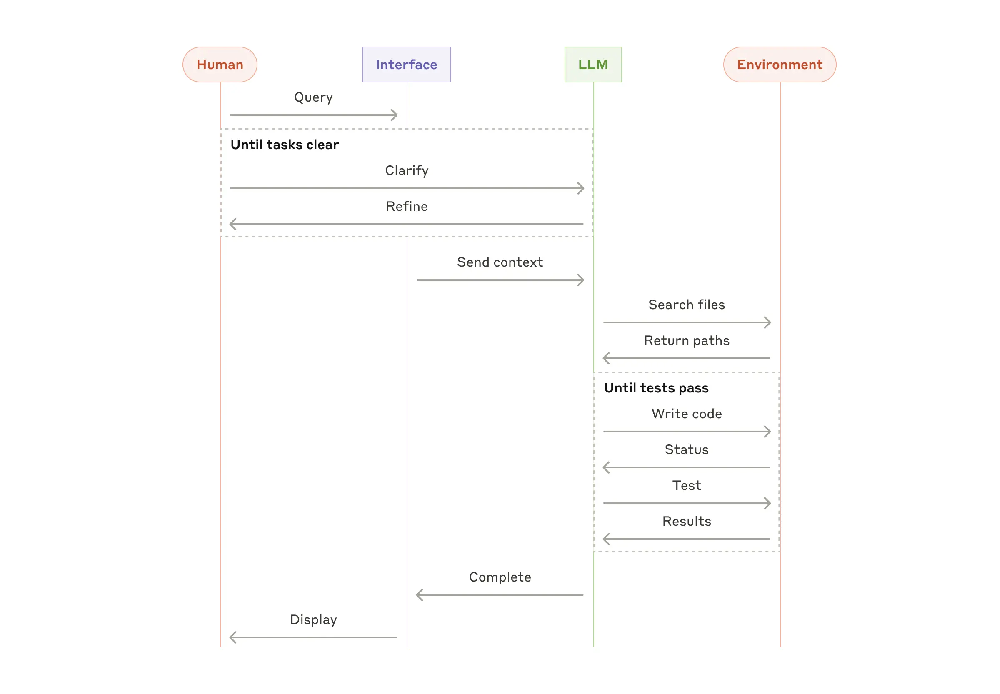

AI agents and workflows
LLM systems that use tools, memory, retrieval, and environmental feedback to complete tasks beyond a single model call. The design problem is deciding when a fixed workflow is enough, when a single tool-using agent is justified, and when multiple agents earn their coordination cost.
Workflows vs Agents
Workflows route LLM calls and tools through predefined code paths. Agents let the LLM dynamically choose its process and tool use based on the task and feedback from tools, tests, files, or external state.

The engineering bias should be conservative. Start with a single LLM call, retrieval, and examples. Add workflows when the task has clear repeatable stages. Add agents when the path cannot be predicted ahead of time and the system can observe ground truth.

The Core Distinction
The right question is never "should I use multiple agents?" but "what kind of coordination does this task actually need?"
| Property | Sub-Agents | Agent Teams |
|---|---|---|
| Lifecycle | Short-lived, fire-and-forget | Long-running, persistent |
| Communication | Parent to sub-agent to result only | Peer-to-peer between teammates |
| Shared state | None | Shared task list with dependencies |
| Result | Compressed output back to parent | Continuous coordination |
| Best for | Embarrassingly parallel work | Ongoing negotiation between tasks |
Sub-agents provide context compression and predictable information flow. Agent teams provide persistent coordination, but add state and communication overhead.
The Five Orchestration Patterns
Prompt Chaining
Sequential steps where each model call processes the previous output. Use when order matters and subtasks are cleanly decomposed.
Routing
Classify the input and send it to a specialized prompt, tool, or model. Useful when one generic prompt performs poorly across categories.
Parallelization
Run independent subtasks or multiple attempts at once, then aggregate. Good for sectioning, voting, review, and independent research.
Orchestrator-Worker
A central LLM decomposes work, delegates to focused workers, and synthesizes results. This is the dominant production pattern.
Evaluator-Optimizer
One model generates and another evaluates or critiques in a loop. Use when quality matters more than latency.

When NOT to Use Multi-Agent Systems
Multi-agent systems earn their cost in three situations: context protection, true parallelization, and specialization. They are the wrong call when agents constantly need to share context, dependencies create more overhead than value, or one well-prompted agent can handle the task.
Tool Interfaces Are the Product
Tool design deserves the same attention as prompt design. A model can only use a tool reliably if the interface makes the intended action obvious.
- Use clear tool names and parameter names.
- Include examples, boundaries, and edge cases in descriptions.
- Prefer output formats close to text patterns models already handle well.
- Avoid brittle line counts, excessive escaping, or hidden state.
- Make wrong calls harder with absolute paths, typed enums, and explicit dangerous-operation gates.
If a junior engineer would need to stop and infer what the tool means, the model probably will too.
The Two-Tier System
Context windows are zero-sum. The production pattern is often a business-context orchestrator that writes precise prompts for coding agents, while downstream agents stay focused on implementation context.
| Orchestrator | Coding Agent | |
|---|---|---|
| Business context | Customers, priorities, notes, memory | None or minimal |
| Technical context | High-level architecture | Repo conventions, APIs, tests, source files |
| Good at | Understanding why, routing, writing prompts | Following conventions, editing code, running checks |
| Bad at | Low-level implementation details | Long-term prioritization and business memory |
tmux send-keys -t codex-templates "Stop. Focus on the API layer first, not the UI." EnterThe practical bottleneck for parallel coding agents is often local RAM and duplicated dependency/build work, not model price.